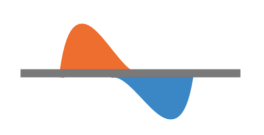

|
expressRNA: web research platform to study post-transcriptional modifications by analyzing data from diverse RNA sequencing protocols (RNA-seq, long-read or 3'-end targeted sequencing) and estimating alternative polyadenylation (APA) and alternative splicing regulation. This regulatory information is then combined with RNA-protein binding CLIP to study regulatory principles via RNA maps.
expressRNA builds upon 3 open-source bioinformatics packages (apa, pybio, RNAmotifs2; see GitHub repositories) to perform 3'-end and other sequence data processing and runs diverse state-of-the-art tools (STAR aligner, DEXSeq, minimap2) to compute various steps of the analysis. Moreover, the page you are currently visiting is a web-app written in JQuery and Javascript with a python (mod-wsgy) backend, intended for facilitating the sharing and exploration of results of analyses. The whole source code (front-end and back-end) is available as open-source at the expressRNA GitHub repository. Regarding APA analyses: after enhanced and repressed polyA sites and exons are determined in the experiment, the analysis integrates CLIP data to generate RNA maps. These maps display the level of binding of a protein of interest around regulated features (polyA sites or exons) in a cumulative way across several genes.
 Additionally, we run motif analysis software RNAmotifs2, originally published in Cereda et al. 2014 and extended with cluster motif analysis in Rot et al., 2017. Detected motifs and their positional significance is evaluated and plotted against the same detected regulated features (polyA sites and exons) as with the CLIP RNA maps. Additionally, we run motif analysis software RNAmotifs2, originally published in Cereda et al. 2014 and extended with cluster motif analysis in Rot et al., 2017. Detected motifs and their positional significance is evaluated and plotted against the same detected regulated features (polyA sites and exons) as with the CLIP RNA maps.
Latest News, see all news
09. July 2021The entire expressRNA project (including source code of web pages) is now accessible over the expressRNA public GitHub repository. The development branch (devel) is intended for feature development and is regularly merged with the master branch. If you find expressRNA software / platform useful for your research and data analysis, consider sponsoring it over the GitHub sponsors programme. Alternative Polyadenylation (APA) Computational Analysis
expressRNA focus is on sequence data analysis and alternative polyadenylation analysis (see more in Docs).
Alternative polyadenylation switches are reported (one per gene) and a full report of regulated polyA sites is generated, with interactive plots to browse the results. Our case study was an experiment of HEK-293 with TDP-43 knock-down. Check out the analysis results and the publication.

Architecture
expressRNA combines and integrates several existing software tools and proposes data integrative approaches
for better understanding the underlying processes of post-transcriptioanl modifications. The web exploratory interface facilitates the browsing and interpretation of results.

Citing expressRNA
High-resolution RNA maps suggest common principles of splicing and polyadenylation regulation by TDP-43
Rot, G., Wang, Z., Huppertz, I., Modic, M., Lenče, T., Hallegger, M., Haberman, N., Curk, T., von Mering, C., Ule, J. Cell Reports , Volume 19 , Issue 5 , 1056 - 1067 Contact
Automatic pipelines provide a basic overview of novel data, however research work usually requires additional steps and analysis. Please don't hesitate to contact us in case you would like to start a collaboration. If you have a suggestion or discovered a problem in the analysis, you can use directly the expressRNA GitHub Issues.
|
|
|||||||